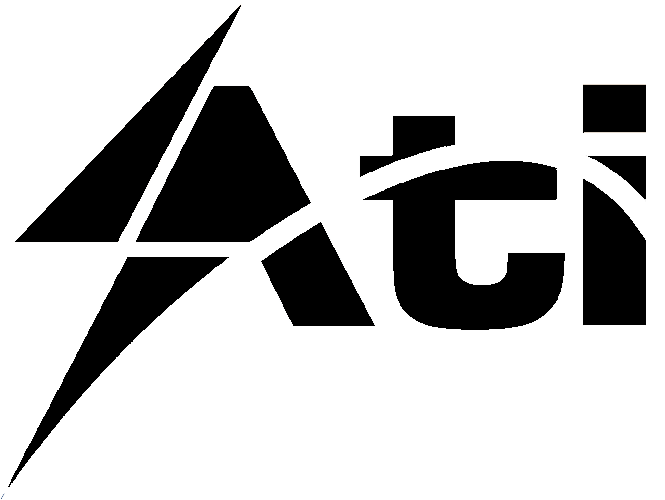

54592198 | @ativc.une.cu
SIGMET
Es una herramienta desarrollada con el objetivo de realizar el seguimiento y control metrológico de los instrumentos de medición, así como de sus respectivos planes de calibración y verificación.
Descargar
ENERGÍA
El Sistema de Gestión Energía es una herramienta web desarrollada con el objetivo de realizar el seguimiento y control de los gastos energéticos reales de acuerdo al plan, así como sus picos.
Descargar